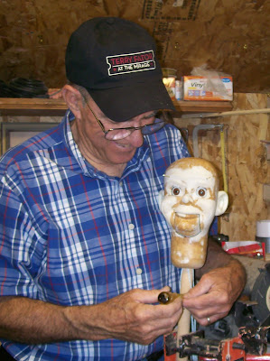

Comin' along with Fator "magic"
7/28/2010
You may remember the three unfinished hard puppet heads I purchased on eBay a few weeks ago - the very same heads I started building over 25 years ago, but never completed and subsequently found their way to eBay auction... Long story short, I'm nearing completion of the work on one of them. Shortly after this photo was taken yesterday, I applied the first coat of paint to the head. I see from this image I was wearing my Terry Fator hat...maybe I was unknowingly hoping a bit of the Fator Magic* would be bestowed upon me as I worked to complete this figure! I can dream, can't I?

Note: *Fator Magic can be spelled with eight letters: KHODRRAW. Unscramble the letters to make two common four letter words and you'll discover Terry's secret of success.